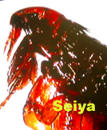
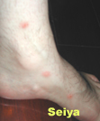
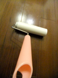
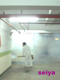
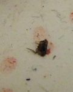

About Ours Application


世屋消毒公司教您如何在家殺跳蚤，首先我們跳蚤叮過的人一定都知，被叮之處奇癢無比，不同於蚊子，跳蚤會不斷一直吸血，成蚤在吸食血液會排出血便，再一直不斷吸，假設說成蚤叮人血為0.5cc，其實真正吸取的才0.1cc以下，其它為血便排出，血便是幼虫之食物來源。
造成台灣地區跳蚤居高不下原因，主要是流浪動物所致，且台灣濕度較高也利於其生長，歐美國家較少跳蚤原因也在於此，一般常見的跳蚤都是以貓蚤與鼠蚤，跳蚤發生最多季節為春末夏初時，從上圖可看出其腳有許多毛（刺)，這是跳蚤附著在宿主最佳之利器，跳蚤身軀為扁平狀，因此想用手去打死跳蚤是沒有用處的，要用掐的才有辦法。

昆蟲綱-微翅目(蚤目)-全世界之跳蚤共有近2300種台灣已知有30種，跳蚤生活史可分為卵、幼虫、蛹、成虫，我們稱它為完全變態之生活史，台灣地區跳蚤最多是在4-6月間，因為跳蚤最適合成長為18-26度上下，濕度在70-80%間，跳蚤的卵大約在0.5-1mm之間，一般幼蚤期大約只有7-15日，但特殊天候環境因素下，可存活數月之久，蛹期為數天至數月，主要也是因天候環境影響，成蚤在無吸血狀態下不用一星期大概就掛了，但在吸血後，可存活一個月至一年多，雌蚤壽命又長於雄蚤，跳蚤能跳的垂直水平距離大約在20-30公分左右，牠通常是遇到有體溫之動物就會往其目標跳躍移動，所以我們在有穿鞋子狀況下，大部份被咬的部位以小腿居多。

如何判定是被跳蚤咬？
被叮咬的部份，與蚊子叮咬不同是在於其紅點部份集中，多數在1-2天會成為一小點之小水泡，周圍為紅腫，蚊子咬則是均紅(被小黑蚊咬比一般蚊咬來得癢，但還是沒有被跳蚤咬的來得癢)，被跳蚤咬之癢度是一般比蚊虫咬來得癢，其癢會持續癢3-7天，少數嚴重者會誘發過敏反應，如果在同一地方同時有多人被咬，就可判斷當地有跳蚤。
判斷居家中跳蚤可能來源的項目
1. 家中寵物從外面帶回室內，而被叮咬。
2. 曾與野貓野狗近距離接觸。
3. 家裡面有老鼠。
4. 剛從公園中之草地回來，或曾經過野貓狗的窩。

此方法適合有時間健康施工者,其家中有對毒性敏感之體弱人士
1.有寵物時，先將寵物使用泡沫清潔液替寵物清洗，可將跳蚤溺斃，家中有老鼠則要先除鼠黏跳蚤黏紙滾桶拖把。
2.使用強力吸塵器將地板吸塵，再使用熱水加肥皂水拖拭地面，最後使用全乾熱之拖把拖拭地面(注意是否有殘留跳蚤躲在乾熱拖把內，如有將它溺斃、牆角及桌下必須特別注意(熱拖可將其卵之蛋白破壞進而殺掉)。
3.沙發使吸塵器吸塵，再用熱毛巾予以擦拭，並將家中之地墊、床被單穿過衣物清洗。
4.地面如果為地毯最佳方法是請清潔公司使用泡沫半濕式清洗法清洗。
5.使用暖爐將室內溫度加溫至40度，2-3小時，並且持續將除濕機打開將濕度控制在40%以下，跳蚤幼虫會脫水而掛掉。
6.室外如有跳蚤可用水淹法，或是乾燥法，將跳蚤溺斃或讓其和脫水死亡，如果是乾燥法，首先要將陰涼處讓太陽曬到。
7.使用紅外線光熱能吸引跳蚤，四週放熱水加清潔劑便可破壞水之表面張力，讓跳蚤跳入溺斃。
8.可使用高溫蒸氣機清理地面，將虫卵之蛋白破壞，並使用黏膠拖把(無塵室專用)清理地面。
9.使用黏紙滾桶拖把，每日地面清潔，並且需隨時注意每當一處待至3-10分，先在其黏紙滾桶、拖把查看是否有跳蚤，以及家中地墊等，請先清洗收藏好。
10.使家里面地墊將其清洗收起，床單被套等五天清洗一次。
以上作業必需在施做第1次後3-5日重覆施作，較可確保除跳蚤的成效。

上述方法都試過無效後，還需仔細想是否有那些地方遺漏，或是座車內有跳蚤(使用藥劑噴在地毯為主)，如果還無法殺掉跳蚤，可能您清的還不夠仔細，或是您可家中有人常將跳蚤帶回家中，非到必要，家中盡可能不使用藥劑為佳。
天然樟腦作忌避，取得不易價格昂貴，現今全世界樟腦丸(油)絕大多數為化學製品。
柑橘皮萃取物之d-limonene linlool 可殺死跳蚤幼及成虫，但此品在台灣未上市，在美國可購得，可自己使用，但切記不可拿去網上網拍，因在台需要藥商資格且送檢，曾能夠販售。
矽藻土為化石物，藉由摩擦將其表層破壞，跳蚤因脫水而死，但因為細小微粒為PM2.5之粉塵，對人體上呼吸道有害，造成空氣污染，不建議使用。
居家除跳蚤的(化學)方法
■化學法速度快，但需小心使用.避免藥藥毒殘留，如果在家中跳蚤嚴重，應該是使用物理及化學法搭配為佳，目前我們在市面上可買到很多殺跳蚤藥，或許很多人買回家後，使用會發現效果不佳，甚至無效，有可能是跳蚤有抗藥性或使用劑量不足或使用方法錯誤，以水煙藥劑是最容易使用方法，一般殺跳蚤需殺2次，原因是成虫被殺死後，還有其卵尚未殺死。
■在台灣環保署登記許可之跳蚤防制用藥目前約有26種，只要您購買的藥劑是合乎環保署公告之住家環境用藥，且未過期，都是比較能安心使用，但要注意本身之防護裝備及用藥之劑量，目前一般都是使用合成除虫菊精，或是陶斯松、芬普尼等，噴撒時依購買藥劑上說明，每平方公尺應噴多少量，確實噴灑，或是使用昆虫生物調節劑處理未與成虫之跳蚤，在大賣場均有售此藥劑，但需注意人畜及水生動物(魚)不可在室內。施作完需清潔所有傢俱以策安全，跳蚤化學防治一般需施作2次，原因在於環境中之卵再度孵化，或是同時施作昆虫生長調節劑，抑制其生長為成虫(只有成虫才會吸人血)。

1. 洽詢合格之獸衣師，請獸醫依症狀開殺虫藥劑或是忌避劑，切勿隨意購買藥劑造成寵物過敏或有害人體之用藥，目前市售賣得比較好藥是蚤不到，但那長期使用對寵物會造成很大傷害，切記那藥劑也不可拿到人體上塗抹。
2. 將寵物用泡沫清潔劑清洗，至少要將泡沫留在身上三分以上，再用溫水沖洗，日常可用蚤梳來視察是否還有跳蚤殘留。
3. 可使用寵物蚤梳清理，並且準備膠帶，便於將跳蚤黏著(徒手捉跳蚤不易)。
被跳蚤咬止癢方法
我們可以去藥局買一些虫類咬到之止癢劑，或使用冰敷，然後這期間可服用維它命B1(寵物也可服用，其劑量需請教獸醫)，假如還是無法忍受，或是您身體上出現一些過敏反應，此時您應該立刻就醫，如果您曾經是在衛生不良的國家被跳蚤叮咬，要注意是否有發燒或是其它症狀，因為跳蚤可是多種傳染疾病的傳播者，如果有不適應該立刻就醫，或是在被咬處可用較熱的熱水熱敷，會改善其癢的感覺。
其它注意事項：常使用黏紙滾桶拖把，發現紙上有黏到跳蚤，務必要用將其擠壓確定死亡，不然其扁平狀之身軀在黏紙滾桶拖把上，是不易被壓死，隨時都有逃脫可能。